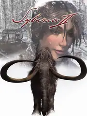

 |
|
| Tiempo de juego | 28s |
| Última actividad | 11/11/2025 10:26:13 |
| Añadido | 23/9/2025 5:57:16 |
| Modificado | 3/12/2025 18:34:27 |
| Estado de finalización | Jugado |
| Librería | Playnite |
| Fuente | |
| Plataforma | PC (Windows) |
| Fecha de lanzamiento | 30/3/2004 |
| Puntuación de la Comunidad | 78 |
| Puntuación de la Crítica | |
| Puntuación de usuario | |
| Género | Adventure Point-and-click Puzzle |
| Desarrollador | Microïds Canada |
| Editor | Nordic Games Publishing |
| Característica | Single Player |
| Enlaces | Steam GOG |
| Tag | |
Esto no es una secuela, es la segunda mitad de un poema. "Syberia II" arranca exactamente donde terminó el primer juego, sin saltos en el tiempo ni resúmenes. Es la conclusión directa del viaje de Kate Walker, una aventura que se vuelve todavía más personal, emotiva y fantástica que la original.
Kate ya no es la abogada que busca cerrar un trato; ahora es la guardiana del sueño de un viejo inventor. Su misión es llevar a Hans Voralberg al destino final de su vida: la mítica isla de Syberia, el último lugar en la tierra donde todavía deambulan los mamuts. El viaje los lleva a través de una Rusia industrial y desolada hasta las tierras heladas del lejano norte.
El arte del maestro Benoît Sokal vuelve a brillar con una belleza melancólica que te parte la cabeza. Los paisajes nevados, los pueblos perdidos en el tiempo y las extrañas criaturas que habitan la tundra son postales inolvidables. La atmósfera de estar en el fin del mundo, siguiendo una búsqueda imposible, está increíblemente lograda.
La jugabilidad mantiene la fórmula que hizo grande al original. Es una aventura gráfica pura, de ritmo pausado, donde tenés que explorar, hablar con personajes entrañables y resolver puzzles ingeniosos que se sienten parte orgánica del mundo. El foco está puesto al 100% en la historia y la inmersión.
"Syberia II" es el broche de oro para una de las historias más bellas y originales del género. Es una aventura sobre la amistad, la lealtad y la persecución de un sueño hasta las últimas consecuencias. Un final emotivo y satisfactorio para un viaje que se queda con vos para siempre.